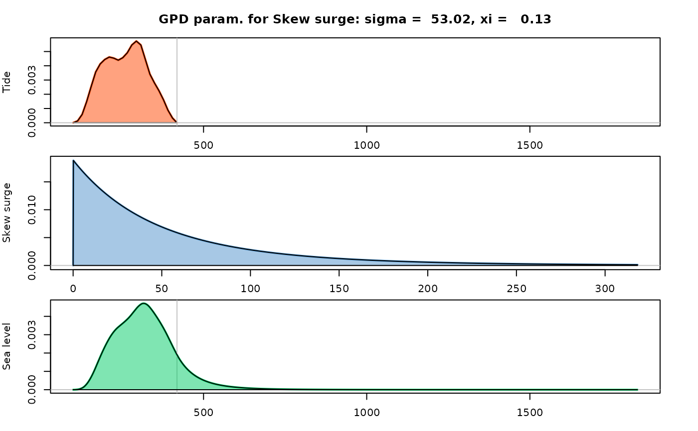
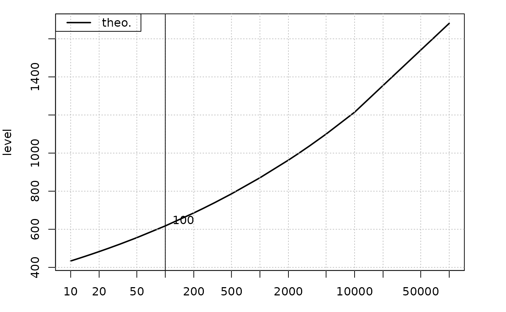

Convolution of a spline density and a GP distribution
GPtail.RdConvolution of a spline density and a GP distribution.
Usage
GPtail(x,
threshold.y = NA,
distname.y = "GPD",
par.y = c(scale = 1, shape = 0.05),
covpar.y = NULL,
lambda = ifelse(is.na(threshold.y), 705.8, NA),
shift.y = ifelse(is.na(threshold.y), 0, threshold.y),
varnames = c(x = "X", y = "Y", z = "Z"),
pct.conf = c(95, 70),
use.covlambda = "lambda" %in% colnames(covpar.y),
deriv = !is.null(covpar.y),
Tlim = c(1, 1e+05),
pred.period = NULL,
pred.prob = NULL,
trace = 1L,
N = 2 * 1024,
N.ex = 300,
plot.which = 0)Arguments
- x
-
An object with S3 class
"SplineDensity". - threshold.y
-
Optional threshold.
- distname.y
-
Name of the distribution in the Generalized Pareto family. For now, only
"GPD"is allowed. - par.y
-
Numeric named vector of GP parameters, see examples. This is usually a vector of estimated parameters.
- covpar.y
-
Covariance matrix to be used in a delta method. This is for the parameters of the \(Y\)-part, but can contain a row and column for the event rate
lambda(see Details). The colnames and rownames must agree and must be equal either tonames(par.y)or toc("lambda", names(par.y)). - lambda
-
Rate to be used in the computation of the return levels. Should be given in events by year since the return levels are given on a yearly basis.
- varnames
-
Names for the three variables, with distribution: spline density, GP and convolution.
- shift.y
-
Shift of the distribution of \(Y\), i.e. location parameter for the GPD.
- pct.conf
-
Confidence levels in percent. Should be given in decreasing order.
- use.covlambda
-
Logical indicating if the uncertainty on the event rate
lambdashould be taken into account in the delta method or not. - deriv
-
Logical. If
TRUE, the derivatives of the survival of the sum \(Z\) will be computed. - Tlim
-
Limits for the return periods used in computations. Only the second element
Tlim[2]is used at present to se the maximal return period. - pred.period
-
If not
NULL, a vector giving periods at which predictions (return levels and confidence limits) should be computed and returned in theret.levdata.frame. - pred.prob
-
Alternative to
pred.periodto set the return periods at which return levels and confidence bounds are computed. - trace
-
Integer level of verbosity.
- N
-
Number of discretization points in the range of
x, hence length of the vector used forxin the discrete convolution. - N.ex
-
Number of (tail) values \(z\) for the r.v. q\(Z\) where an exact computation of the survival \(S_Z(z)\) is performed. The values are greater than the upper end-point of \(X\). These values are used in most results (density, conditional expectation, ...) but not in the return levels table where only rounded return periods are used after an interpolation.
- plot.which
-
Integer choosing a plot, if any. The value
0plots nothing,1plot densities and2plot the survival.. - prob
-
Probability for which the return levels are wanted in the
ret.levtable. A NULL value correspond to a default vector of values.
Value
A list similar to that returned by convSL.
Details
Given a density for a bounded r.v. \(X\), the distribution of \(Z := X + Y\) is computed where \(Y\) is a r.v. independent of \(X\) with a Generalized Pareto distribution. The r.v. \(Y\) will often be the excess in a POT model, in which case the exceedance rate \(\lambda\) should be used to get return periods in years.
Examples
data(Brest.tide)
SD <- SplineDensity(x = Brest.tide$x, f = Brest.tide$y,
order = 2, nKnots = 24)
#> leftDeriv = 0 9.381932e-06
#> rightDeriv = 0 -2.479663e-05
par.y <- c("scale" = rgamma(1, shape = 2, scale = 30),
"shape" = 0.2 * runif(1))
res <- GPtail(x = SD, par.y = par.y, lambda = 1)
#> o Period for return levels (pred.period)
#> [1] 1e+00 2e+00 5e+00 1e+01 2e+01 3e+01 4e+01 5e+01 6e+01 7e+01 8e+01 9e+01
#> [13] 1e+02 2e+02 5e+02 1e+03 1e+04 1e+05
#> ymax = Inf
#> E.y = 60.9 sd.y = 65.7
#> o computing the expectation of the exponential tail: muStar.x = 296.122
#> o Using closed form smax = 1830
## change variable names
varnames(res) <- c(x = "Tide", y = "Skew surge", z = "Sea level")
## plot the densities
plot(res)

## plot the return level
plot(res, which = 3)
#> Warning: All values missing in L.95 and U.95
#> Warning: All values missing in L.70 and U.70
#> Warning: confidence limits for level 95% not found in data
#> Warning: confidence limits for level 70% not found in data
